A further example is the laminar viscous compressible flow about a naca012 airfoil. Results for this problem were reported by [55]. The entrance Mach number is 0.85, the Reynolds number is 2000. Of interest is the steady state solution. In CalculiX this is obtained by performing a transient CFD-calculation up to steady state. The input deck for this example is called naca012_visc_mach0.85_veryfine.inp and can be found amoung the CFD test examples. Basing the Reynolds number on the unity chord length of the airfoil, an entrance unity velocity and a entrance unity density leads to a dynamic viscosity of 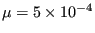. Taking 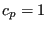 and 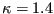 leads to a specific gas constant 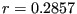 (all in consistent units). Use of the entrance Mach number determines the entrance static temperature to be 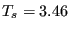. Finally, the ideal gas law leads to a entrance static pressure of 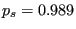. Taking the Prandl number to be one determines the heat conductivity 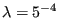. The surface of the airfoil is assumed to be adiabatic.
The results for the pressure and the friction coefficient at the surface of
the airfoil are shown in Figures
38 and 39, respecively, as a function of the shock
smoothing coefficient. The pressure coefficient is defined by
 , where p is the local static
pressure, 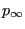,
and 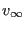 are the static pressure,
density and velocity at the entrance, respectively. The friction coefficient is defined by
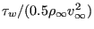, where 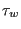 is the local shear
stress. Both graphs agree quite well with the literature, especially if one
takes into account that the sources cited by Mittal also vary. Notice that the mesh at
the airfoil is very fine. Indeed, 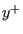 at the boundary of the first layer of
elements adjacent to the airfoil, defined by
, where p is the local static
pressure, 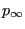,
and 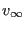 are the static pressure,
density and velocity at the entrance, respectively. The friction coefficient is defined by
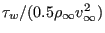, where 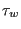 is the local shear
stress. Both graphs agree quite well with the literature, especially if one
takes into account that the sources cited by Mittal also vary. Notice that the mesh at
the airfoil is very fine. Indeed, 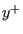 at the boundary of the first layer of
elements adjacent to the airfoil, defined by
| 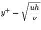 | (2) |
where u is the velocity in x-direction at that position, h is the element height and is the kinematic viscosity, reaches the value of 0.2. In general,no value exceeding 1 is recommended.